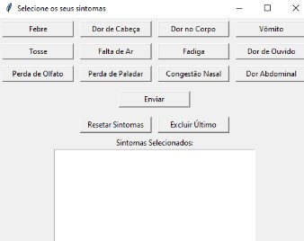

Problema
Nos últimos anos, o serviço de teleconsultas médicas experimentou um crescimento expressivo, impulsionado principalmente pela pandemia de COVID-19, uma necessidade, e uma das principais outros desafio enfrentado é a demora no teleatendimento. A alta demanda de pacientes em relação ao limite de número Essas dificuldades. Em resumo, o crescimento das teleconsultas médicas trouxe consigo dificuldades na comunicação, problemas tecnológicos
Motivação
Nossa motivação é o desejo de melhorar a eficiência e a qualidade do atendimento médico remoto, facilitando a comunicação entre pacientes e profissionais de saúde.
Solução
Plataforma que agiliza o teleatendimento, permite escolha de sintomas em botões clicáveis e encaminha informações diretamente ao médico, facilitando a comunicação e coleta de dados na telemedicina.

Com isso, concluímos que os gráficos 1 e 2 mostram um grande aumento nas telessaúdes de 2019 a 2022, resultando em um maior uso desta ferramenta, o que gera um maior desenvolvimento tecnológico para esta área.
Python
Identificando o Problema
O serviço de teleconsultas médicas cresceu devido à pandemia, mas enfrenta desafios, como problemas de comunicação e tecnológicos, além de demoras no atendimento. Isso pode afetar a construção do relacionamento médico-paciente e causar frustração nos pacientes.
Proposta de Solução
Nosso produto é um site que simplifica o processo inicial do teleatendimento, permitindo ao usuário selecionar sintomas em botões clicáveis para agilizar a identificação das necessidades médicas, facilitando a comunicação e acelerando a teleconsulta.